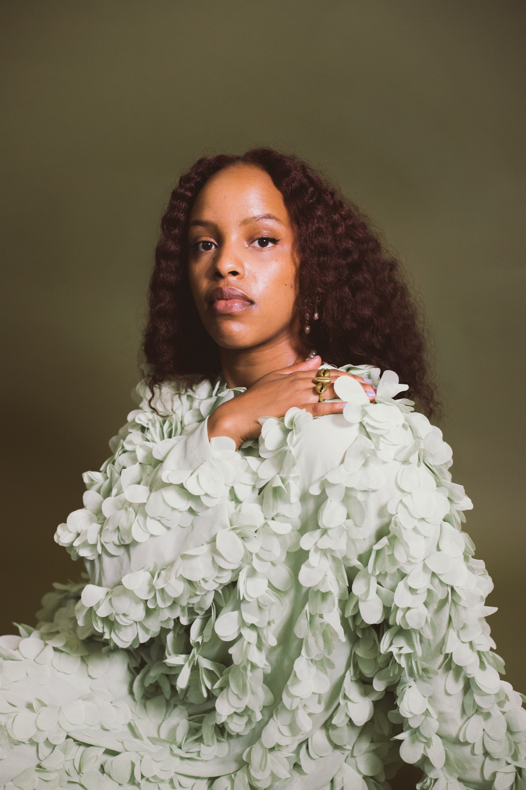

SEATTLE. RWANDA. THE STAGE.

Afrobeats · festival · live
Larissa Umulinga is a Seattle-based Rwandan photographer specializing in live music and artist portraiture, with a deep focus on African and Afrobeats culture.
Her live work includes assignments for DukeConcept, Blastfest, and Giants of Africa — Davido, Asake, Tyla, Tiwa Savage, Ruger, Adekunle Gold, Black Sheriff, Ayra Starr, Simi, Buju. Editorial for The Brooklyn Circus. Cover art for SPICE by Pher and Sweet Afrosexy Summers. Featured in Bubblegum Club.
This site is the concert-first archive: the pit, the stage light, the nights that hold.